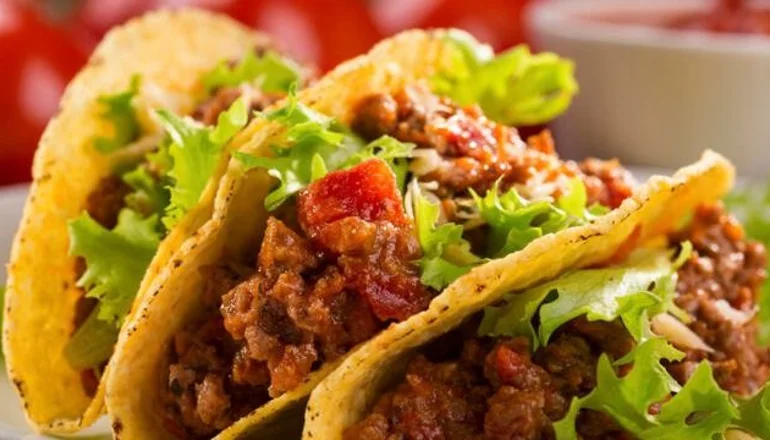
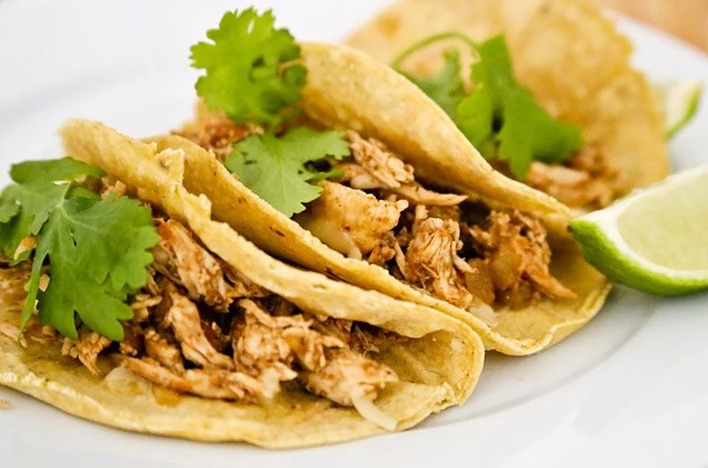
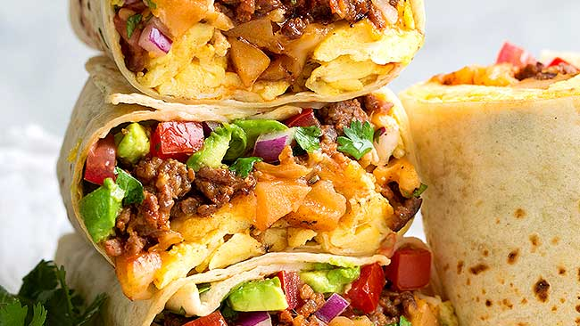
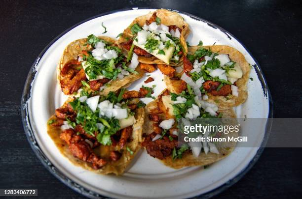
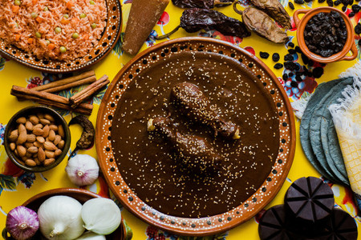
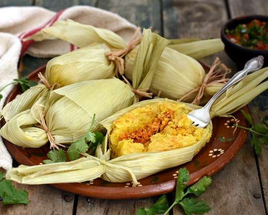

Te traemos las mejores recetas para que seas el anfitrion de la juntada
Tacos de carne
Lista de Ingredientes (para 10 tacos)
- 250/300 gramos de carne: puede ser peceto, nalga, la que mas te guste
- 1 cebolla morada
- 2 dientes de ajo
- 1 chile fresco o aji picante (opcional)
- 1/2 morrón rojo
- 1/2 morrón verde
- Jugo de 1 lima o limon
- 1 tomate mediano
- Chile seco (opcional)
- Sal y pimienta
- Cilantro
- Aceite neutro

Comenzamos la preparación:
- Cortamos las cebollas y morrones en julianas (tiras finas y delgadas). El ajo y el chile bien chiquitos, podemos (si tenemos) picarlos con una minipimer o procesadora. El tomate en cuadraditos.
- La carne la cortamos en tiritas y en un bowl la salpicaremos con la mitad del jugo de lima. Dejaremos reposar unos 20 minutos para macerarse. Podemos agregarle a este preparado, mostaza o un chorrito de cerveza.
- Ponemos un chorrito de aceite en la sarten que usaremos para saltear la carne, pero primero colocaremos el chile seco y el oregano por 2 o 3 minutos.
- Agregamos el ajo y el chile fresco e ir dorandolos por unos minutos. Pasado el tiempo sumamos la carne para saltear.
- A media cocción de la carne, agregamos el tomate en cubos para terminar de cocinar.
- El resto de verduras las saltearemos en otra sarten, con la condicion de que esten bien cocidas pero a la vez firmes.
- Por ultimo, juntamos ambas cocciones de carne y verduras y agregamos el resto de jugo de lima
Tacos de pollo
Lista de ingredientes
- 2 pechugas de pollo.
- 4 dientes de ajo.
- Jugo de 1 lima.
- Perejil a gusto.
- 1 cebolla de verdeo.
- 1 cucharada de comino.
- Chile seco a gusto.
- Aceite de oliva.
- Sal y pimienta

Paso a paso
- Cortar las pechugas en tiritas.
- Dejarlas macerar por un rato junto con el jugo de limón, los ajos picados, el chile seco, sal y pimienta.
- Calentar la sartén con aceite y el comino.
- Dorar el pollo.
- Sumar la cebolla de verdeo.
- Rectificar con sal y pimienta.
- Recomendado: agregarle una cucharada de queso crema o queso.
Te dejamos otras recetas mexicanas para que puedas chusmear

Burritos
Los burritos mexicanos de carne picada son un plato típico de las fronteras de México...

Tacos al pastor
Los tacos al pastor son hechos de carne de cerdo marinado en salsa de Chile, la carne se pone al asador verticalmente...

Mole
El mole no es una única salsa sino todo un universo de salsas que definen la cocina mexicana....

Tamales
Los tamales son un plato que con frecuencia se cocina en familia (es decir, entre varias personas) y que tiene cierta complejidad de preparación.